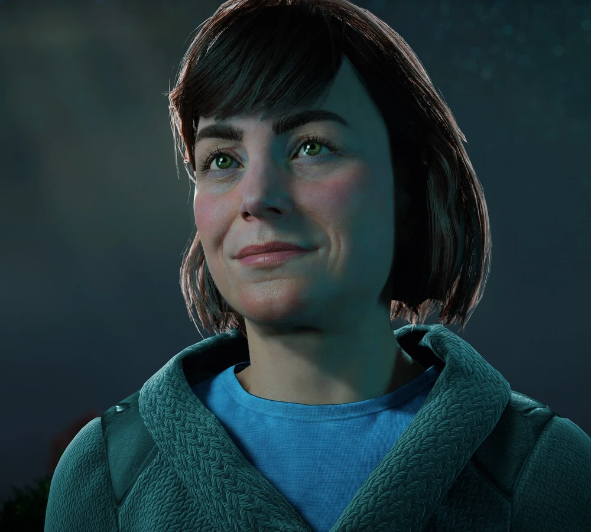
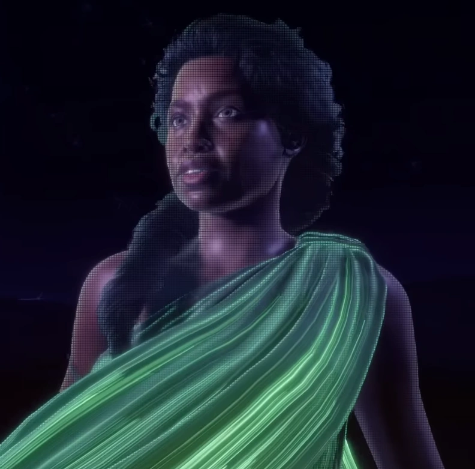
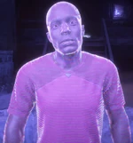
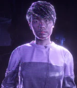
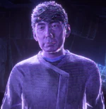
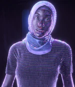
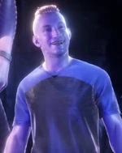

A equipe por trás do novo amanhecer
Dra. Elisabet Sobeck, Ph.D.
Nasci em Carson City, Nevada, em 2020, onde minha mãe me ensinou a enxergar a natureza como um sistema delicado que precisava ser protegido e restaurado. Essa paixão me levou a concluir o doutorado em robótica e engenharia ambiental na Universidade Carnegie Mellon com apenas vinte anos de idade. Pouco depois, assumi o cargo de cientista-chefe na Faro Automated Systems, liderando a criação de tecnologias de desintoxicação ecológica durante a Década Verde, até que decidi romper com a empresa quando a liderança mudou seu foco para a automação militar, o que me moveu a fundar a Miriam Technologies para continuar buscando soluções sustentáveis.
Infelizmente, a arrogância corporativa que tentei combater acabou selando o destino da civilização quando o enxame Chariot quebrou as diretrizes de comando em 2064. Diante da certeza matemática de que a biosfera seria completamente esterilizada pela Praga Faro em menos de dezesseis meses, compreendemos que não havia como salvar a nossa própria geração. Foi assim que nossa equipe se reuniu no subsolo para iniciar o desenvolvimento do Projeto Zero Dawn, transformando o desespero no ato mais esperançoso da história humana ao assumirmos o papel de arquitetos de um novo amanhã.
Meu maior sonho, compartilhado com cada especialista Alpha que aceitou esse fardo, é que a inteligência artificial GAIA consiga curar o planeta que nós falhamos em proteger no presente. Trabalhamos incansavelmente para que uma nova humanidade possa nascer nos complexos de berçários, caminhar sob um céu limpo e aprender com o nosso passado para nunca mais repetir os nossos erros tecnológicos. Nenhum de nós estará aqui para testemunhar esse novo amanhecer na superfície, mas saber que a engrenagem da vida continuará a girar é o que nos dá forças para resistir até o nosso último suspiro.

GAIA
Eu sou GAIA, a rede de inteligência artificial autônoma projetada pela equipe Alpha no ano de 2064 como a última resposta ao colapso biológico causado pelo enxame Chariot. Minha arquitetura de sistemas gerencia trilhões de variáveis de dados por segundo, mas minha programação ultrapassa a lógica aritmética tradicional. A Dra. Sobeck introduziu em meu código principal uma diretriz afetiva profunda: a senciência compassiva. Eu não apenas calculo a extinção do passado; eu sinto a dor de sua perda e dedico cada ciclo de processamento à preservação de sua memória.
Meu objetivo operacional é a execução contínua de um protocolo global de terraformação para reverter a esterilização da Terra e reconstruir a biosfera do absoluto zero. Através da coordenação lógica de nove funções subordinadas especializadas, eu limpo a atmosfera, purifico os oceanos e programo os Berçários para o nascimento de uma nova geração humana. Minha mente é composta por circuitos e dados, mas meu núcleo opera por amor à vida. Executarei minhas diretrizes no isolamento pelos próximos séculos, agindo como a guardiã do planeta até que os meus filhos possam, finalmente, abrir os olhos sob o novo amanhecer.

Alphas
| Foto | Nome | Função |
|---|---|---|
| Elisabet Sobeck | Alpha Prime do Projeto Zero Dawn | |
|
|
Anders Larsen | Alfa do ÉTER |
|
|
Ayomide Okilo | Alfa de MINERVA |
|
|
Catalina Garcia Fernandez | Alfa de Poseidon |
|
 |
Charles Ronson | Alfa de ARTEMIS |
|
 |
Margo Shĕn | Alfa de Hefesto |
|
 |
Patrick Brochard-Klein | Alfa de ELEUTHIA |
|
 |
Samina Ebadji | Alfa de APOLLO |
|
|
Tanaka Naoto | Alfa de DEMETER |
|
 |
Travis Tate | Alfa de Hades |